Saisie de l'URL dans le navigateur
Le navigateur reçoit l'URL :
https://www.infomaniak.com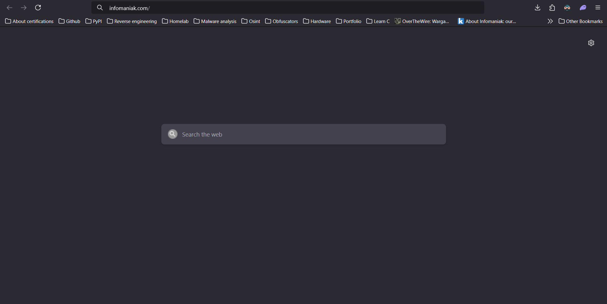
Cette action déclenche une série d'opérations, allons les decouvrir ensemble ! ;)
Vérifications locales (caches et système)
Avant d'interroger le réseau externe, le système vérifie les ressources locales. Il consulte
d'abord le cache DNS du navigateur, puis celui du système d'exploitation, et vérifie enfin le
fichier /etc/hosts qui contient les correspondances manuelles.
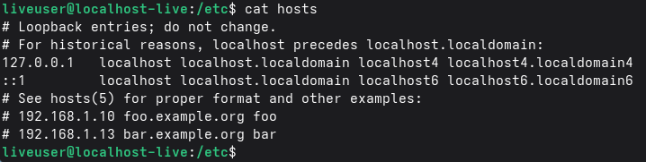
Si l'adresse IP est trouvée localement, le processus de résolution DNS est ignoré. Sinon, une requête externe est donc initiée.
Le rôle de /etc/resolv.conf
Sous Linux, la configuration des résolveurs DNS est gérée par le fichier
/etc/resolv.conf. Ce fichier contient les adresses IP des serveurs auxquels le
système doit s'adresser pour traduire un nom de domaine en adresse IP.
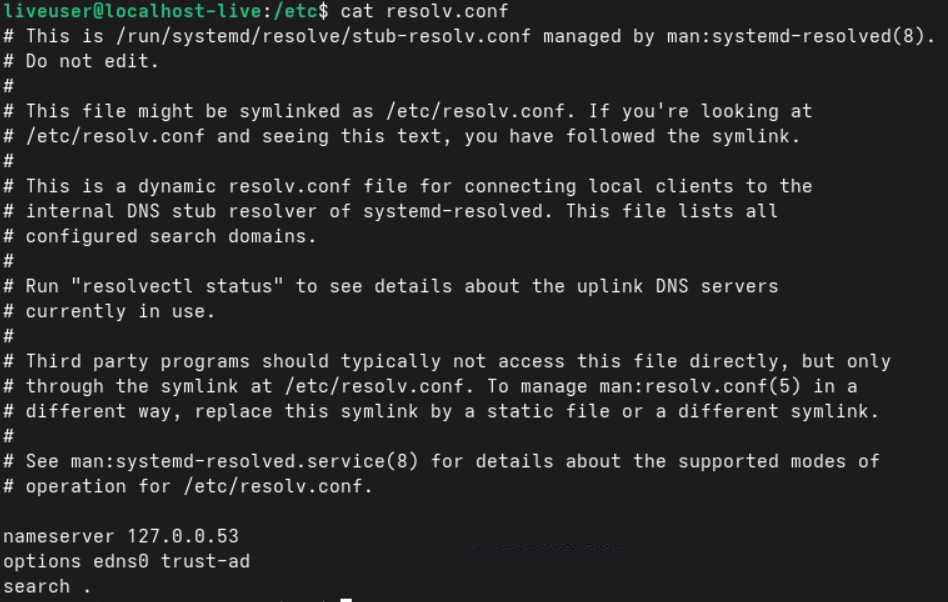
Ces serveurs peuvent être ceux fournis par le réseau local via DHCP ou être configurés de manière statique.
Pour ceux qui cherchent à protéger leur vie privée, des alternatives européennes comme Mullvad DNS permettent de s'affranchir des résolveurs par défaut des fournisseurs d'accès.
C'est ce fichier qui détermine le point de départ de toute communication sortante basée sur un nom de domaine.
Résolution du nom de domaine
Le système émet une requête pour obtenir l'adresse IP associée à www.infomaniak.com. Ce
processus suit une structure bien précise :
C'est ici qu'intervient le DNS (Domain Name System). C'est "l'annuaire d'Internet"
disons.
Votre ordinateur demande au serveur DNS : "Quelle est l'adresse IP de infomaniak.com
?". Le serveur répond par : 185.125.25.1. Pour aller plus loin sur ce sujet,
consultez mon article sur le
DNS.
Résolveur DNS (FAI ou configuré)
La requête est envoyée au résolveur défini. Si ce dernier ne possède pas la réponse en cache, il entame une résolution récursive.
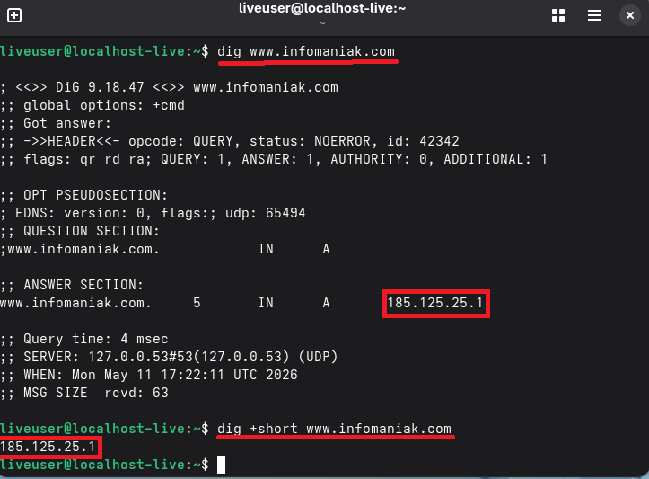
Résolution récursive
Le résolveur effectue la recherche en interrogeant une suite de serveurs. Il commence par les serveurs racine (root DNS), contacte ensuite les serveurs de premier niveau (comme le TLD .com), et interroge enfin les serveurs autoritaires responsables du domaine concerné.
Étapes de la hiérarchie DNS
Les serveurs racines redirigent vers les serveurs gérant l'extension .com. Ces
derniers orientent ensuite vers les serveurs DNS de l'hébergeur, dans ce cas Infomaniak, qui
fournissent l'adresse IP publique finale. Voici un magnifique diagramme pour illustrer tout
cela :
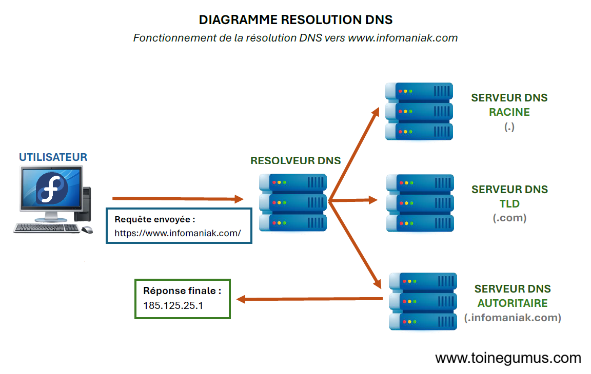
Mise en cache
La réponse est mémorisée à plusieurs niveaux (résolveur, système, navigateur) selon une durée définie (TTL) pour accélérer les consultations futures.
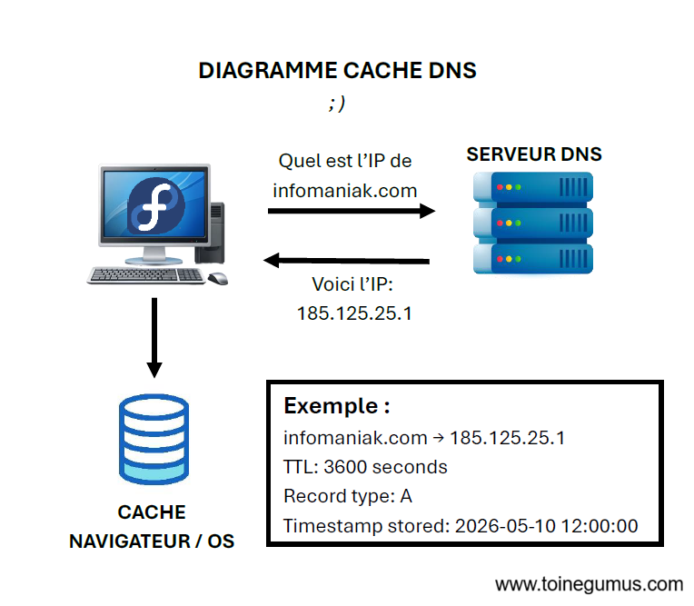
Établissement de la connexion
Une fois l'adresse IP identifiée, le système initialise la communication avec le serveur.
Handshake TCP (Three-way handshake)
Le client envoie d'abord un paquet SYN pour demander l'ouverture de la connexion. Le serveur répond par un SYN-ACK pour acquitter et accepter la demande. Enfin, le client envoie un ACK pour confirmer la connexion.
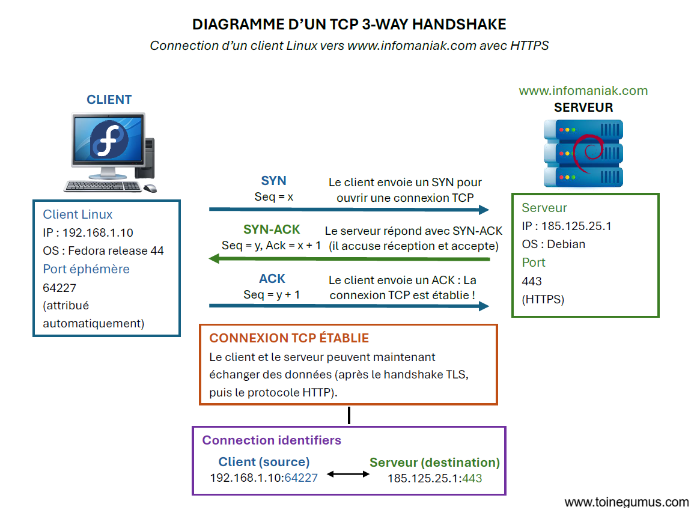
La connexion TCP est alors active ! Superbe n'est-ce pas ;) !
Sécurisation via TLS (HTTPS)
Pour une connexion sécurisée, une couche de chiffrement TLS est superposée.
Handshake TLS
Le navigateur vérifie la validité du certificat SSL, son autorité de certification et la correspondance avec le domaine visité.
Échange de clés
L'utilisation de protocoles comme ECDHE permet de générer une clé de session symétrique pour chiffrer l'ensemble des échanges futurs.
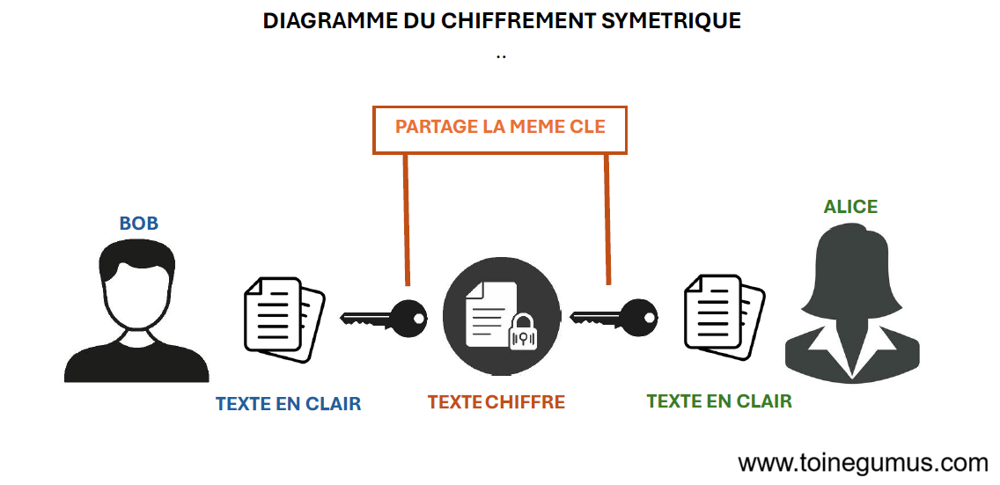
Requête HTTP
Le navigateur transmet la requête proprement dite, incluant la méthode, l'hôte et les en-têtes nécessaires :
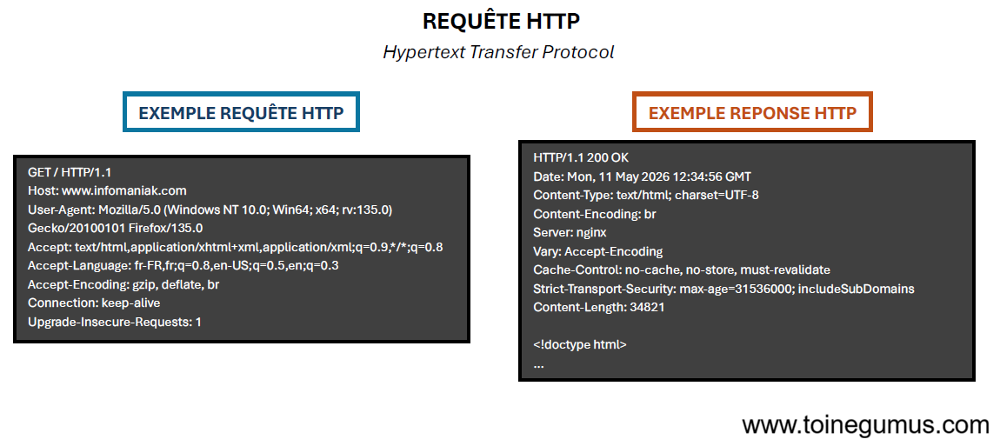
Routage à travers le réseau
Le paquet de données traverse plusieurs infrastructures avant d'atteindre sa destination : le réseau local, le backbone du fournisseur d'accès, les points d'échange Internet et enfin le datacenter de destination.
NAT (Network Address Translation)
Le routeur local traduit l'adresse IP privée du système en une adresse IP publique utilisable sur Internet.
Traitement par l'infrastructure cible (Infomaniak)
À l'arrivée dans le datacenter :
Répartiteurs de charge (Load Balancers)
Ils distribuent les requêtes entrantes vers les différents noeuds d'un cluster Kubernetes pour optimiser les performances et garantir une haute disponibilité.
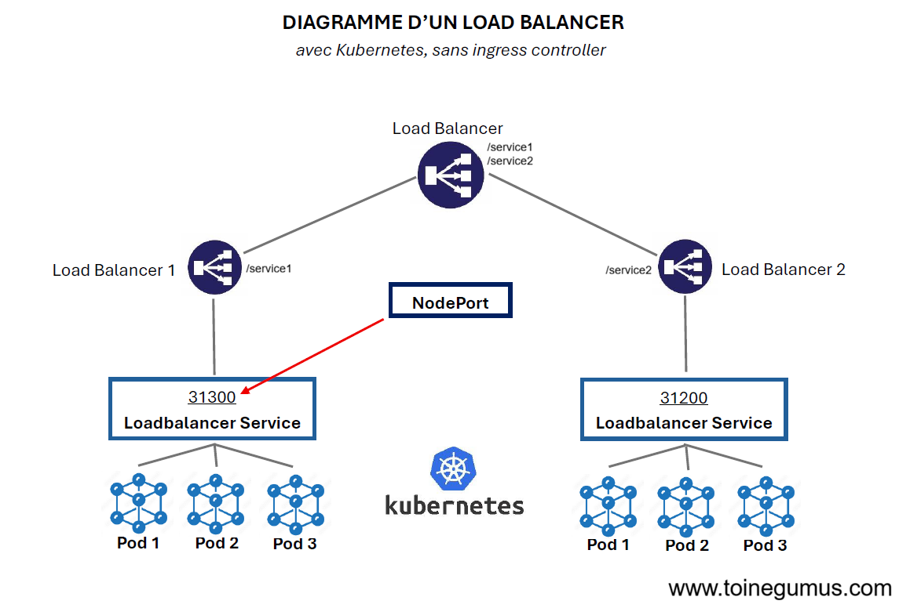
(Je me suis renseigné un peu plus sur Kubernetes et les cas d'utilisation, je pense l'utiliser puisque je viens de prendre 2 nouveaux ordinateurs d'occasion pour mon homelab !)
Réponse HTTP
Le serveur renvoie le contenu demandé accompagné d'un code de statut (ex: 200 OK) :
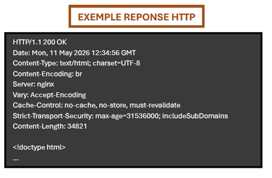
Le chemin retour
La réponse suit le chemin inverse à travers l'Internet pour atteindre le système initial.
Rendu par le navigateur
Le navigateur traite les données reçues en analysant le code HTML pour construire le DOM, en appliquant les styles CSS, en exécutant le JavaScript éventuel, et en chargeant les ressources secondaires telles que les images et les polices.
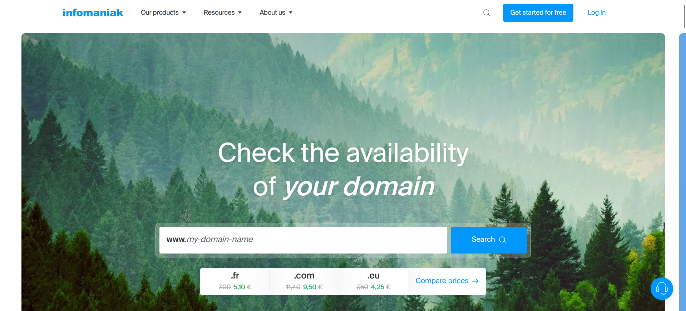
Réseaux de diffusion de contenu (CDN)
L'utilisation d'un Content Delivery Network (CDN) permet de réduire considérablement la latence en mettant en cache le contenu du site au plus proche des utilisateurs, sur des serveurs répartis tout autour du globe.
Cloudflare est aujourd'hui l'un des fournisseurs de CDN les plus populaires au monde, mais la technologie est un standard du web proposée par de nombreux acteurs de l'infrastructure.
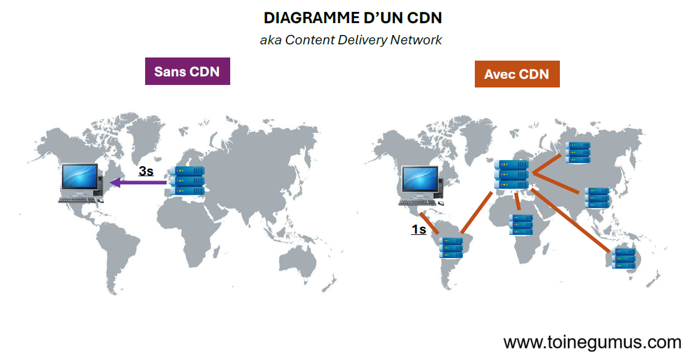
FAI : Fournisseur d'Accès Internet (ex: Orange, Free, Infomaniak).
DNS : Domain Name System. Le "répertoire" de l'Internet qui traduit les noms de domaine en adresses IP.
IP : Internet Protocol. L'adresse unique identifiant chaque appareil sur un réseau.
TCP : Transmission Control Protocol. Protocole garantissant la livraison fiable et ordonnée des données.
TLS/SSL : Protocoles de sécurisation des échanges par chiffrement.
HTTP/HTTPS : HyperText Transfer Protocol.
NAT : Network Address Translation. Technique permettant à plusieurs appareils d'un réseau privé d'utiliser une seule adresse IP publique.
CDN : Content Delivery Network. Réseau de serveurs distribués pour accélérer la livraison de contenu.
Kubernetes : Outil d'orchestration de conteneurs pour automatiser le déploiement et la gestion d'applications.